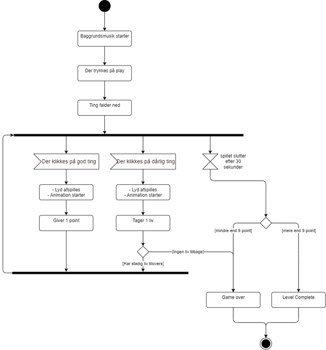

Teknik
Aktivitetsdiagram

Her er mit aktivitetsdiagram, som beskriver mit spils flow. Det går fra spillet startes til det slutter. Spillet varer i 20* sekunder, og har man 9 eller flere point, når spillet slutter, har man vundet. Man får point ved at give katten tun dåser fremfor kødben. Klikker man på et kødben, mister man liv.
State machine diagram

I mit "SMD" går jeg i detaljer med hvilke "js" funktioner mit spil indebærer.